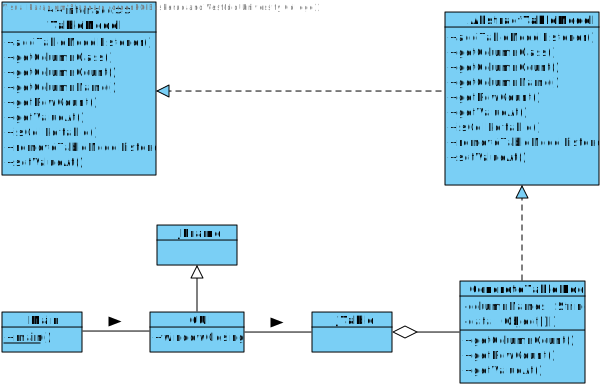
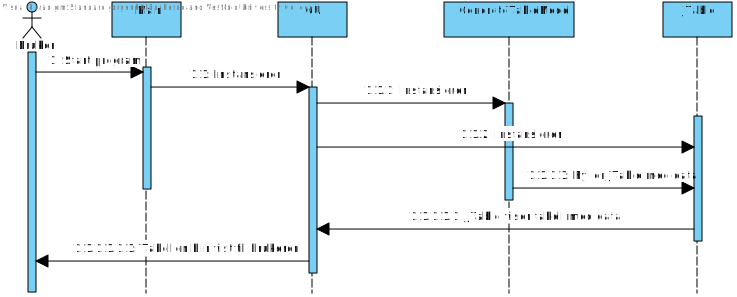
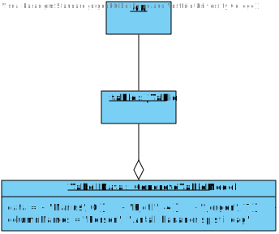
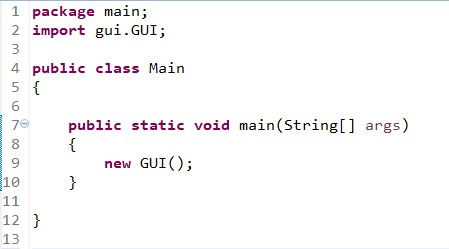
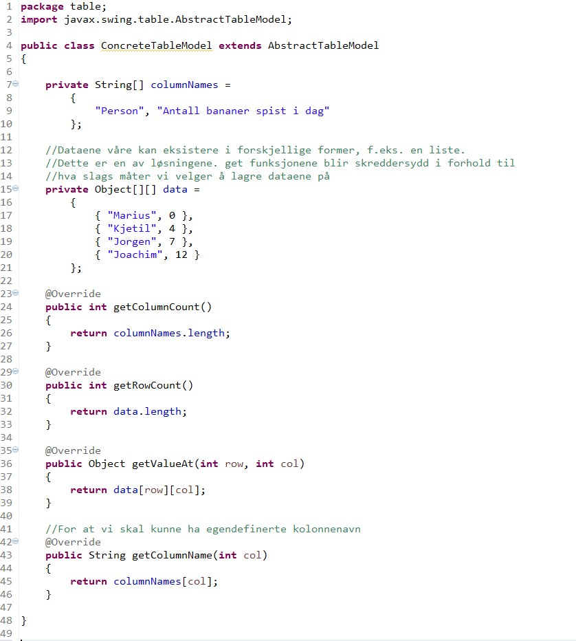
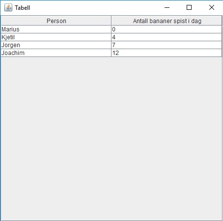

Avansert forklaring av AbstractTableModel
Hva er AbstractTableModel?
AbstractTableModel (ATM) er en måte for oss å lage en skreddersydd modell for en JTable, JTable er en klasse som representerer en tabell som har kolonner med navn og verdier til disse, altså en helt vanlig tabell. Vi kan bruke en JTable i et Java GUI for å vise tabellen. ATM lar oss definere våre egne kolonner og legge verdier i disse kolonnene som vi senere kan bruke for en JTable. Den gir oss også mulighet til å endre på hvordan tabellen vår kommuniserer med Java.AbstractTableModel er en abstrakt klasse, den er abstrakt fordi den implementerer TableModel (som er et interface), men den definerer ikke alle metodene til dette interfacet. Grunnen til dette er at den vil tvinge brukerene av ATM til å lage sine egne definisjoner av de metodene som mangler, gjør du ikke dette, så vil programmet gi deg en error, på grunn av krav fra interfacet.
Hvordan starter jeg å bruke dette?

TableModel er interfacet som bestemmer hva slags funksjoner vi må implementere for at vi skal ha en fungerende TableModel klasse som kan brukes i en JTable. AbstractTableModel inneholder definisjoner for en god del av funksjonene som kreves av TableModel, untatt noen som må defineres selv av utvikleren. ConcreteTableModel er en ny klasse, som vi som utvikler må lage selv, denne klassen arver fra AbstractTableModel. Vi skriver mer om hva du må ha i denne klassen senere.
Hvordan henger alt dette sammen?

Vår første diagramtype er et klassediagram. Klassediagram er den mest grunnlegende diagramtypen i UML og
har i oppgave av å vise klasser, deres forhold, klassefelt og metoder. Med å se på klassediagrammet så kan
man enkelt få en klar oversikt på hvordan klassene i programmet er satt opp. Diagrammet dekker alle relevante
klasser, inkludert main metoden og importerte klasser som swing klassene.

Sekvensdiagrammet viser interaksjonene mellom objektene i en sekvensiell rekkefølge. Det betyr at den første
interaksjonen som foregår i programmet er den øverste pilen som viser interaksjonen mellom bruker og programmet.
Når brukeren starter programmet, så vil main metoden instansiere GUI. Deretter vil GUI klassen instansiere de
neste klassene osv. Den gir en god forståelse av det som skjer trinnvis i programmet som kan hjelpe med å
avdekke feil med logikk eller syntax (for eksempel at ConcreteTableModel prøver å fylle JTable med data
før JTable er instansiert).

Objektdiagrammet over viser alle de aktive objektene i programmet. Diagrammet gir oss oversikt på hvilke
klasser som faktisk blir instansiert, som er nyttig fordi klassediagrammet inneholder flere uinstansierbare
klasser som interface klassen TableModel og den abstrakte AbstractTableModel. Vi kan også se hvilke variabler
som objektene inneholder. Merk at ConcreteTableModel inneholder en "data" variabel som er den lokale datalagringen
vi benytter oss av. Hvilke kolonner og verdier ConcreteTableModel inneholder blir lett synlig med et objektdiagram.

UML inneholder en del andre diagramtyper. Disse diagramtypene er spesialisert for forskjellige bruk, som for eksempel utplasseringsdiagrammer som viser hvordan fysiske deler og komponenter står, som en database. AbstractTableModel og eksempelprogrammet til den er et simpelt, lite program som ikke tilegner seg bredt bruk av forskjellige UML diagrammer. Diagrammene som er inkludert i teksten følte vi var viktig for å få fram forståelse og klarhet i koden vår.
Hvordan lager jeg en tilpasset tabell?
Først så starter du med å lage en subklasse av AbstractTableModel, vi kan kalle den for ConcreteTableModel (CTM), fordi den er et konkret, ferdig objekt, i motsetning til vår abstrakte superklasse. Vår CTM inneholder de fleste funksjonene vi trenger fordi vi arver fra ATM, men vi må selv definere de 3 funksjonene som mangler. Det er viktig å huske at det er ikke ATM som gir oss kravet til å implementere alle funksjonene, men istedet så er det interfacet som ATM selv implementerer, altså TableModel, som gir oss dette kravet. De 3 manglende funksjonene er:
public int getRowCount();
public int getColumnCount();
public Object getValueAt(int row, int column);
MÅ jeg lage min egen TableModel?
Nei, du trenger ikke lage din egen TableModel, klassen DefaultTableModel blir brukt hvis du ikke gir JTable din egen TableModel. DefaultTableModel inneholder alle de nødvendige metodene for å ha en enkel fungerende tabell. Men hvis du vil endre på noe i tabellen din, så må du lage en tilpasset TableModel.Hvor kommer dataen som tabellen inneholder fra?
For å legge informasjonen inn i tabellen, så må informasjonen være lagret et sted. I vårt tilfelle så har vi bestemt oss for å lagre dataen i en dobbel Object array kalt for "data". Data arrayet lagrer data i en tabellstruktur der data[0][0] vil være det første elementet i tabellen, som i vårt eksempel blir "Marius". Det blir lettere å forstå hvordan den lokale lagringstrukturen fungerer hvis du tenker på det som data[rader][kolonner]. Det er også mulig å ha andre kilder av data som tabellen utnytter. En database tilkobling eller XML dokument fungerer like fint, så lenge du endrer koden til å støtte det. Lokale datalageret vi bruker kalles for cache og er en simpel, lett forståelig måte å bruke AbstractTableModel.Hva slags metoder er det muligens praktisk å endre på?
Tabellen din vil fungere fint så lenge du definerer getRowCount(), getColumnCount() og getValueAt(). Men hvis du vil endre på ting som kolonnenavn, forskjellige grafiske ting eller hvordan tabellen din kommuniserer gjennom metodene sine, så kan du overskrive andre i AbstractTableModel metoder også. Et eksempel på en av disse metodene er getColumnName(), som gir oss navnet i form av en string fra en gitt kolonne i tabellen. Uten å overskrive denne, så vil kolonnene i tabellen din bli gitt standard navn av Java. Funksjonen vises i kodeeksempelet under. Det er viktig å nevne at JTable objektet vi bruker må ha en JScrollPane for at kolonnenavn skal vises grafisk.Kode eksempel
Main.java

GUI.java


Kjørende program
